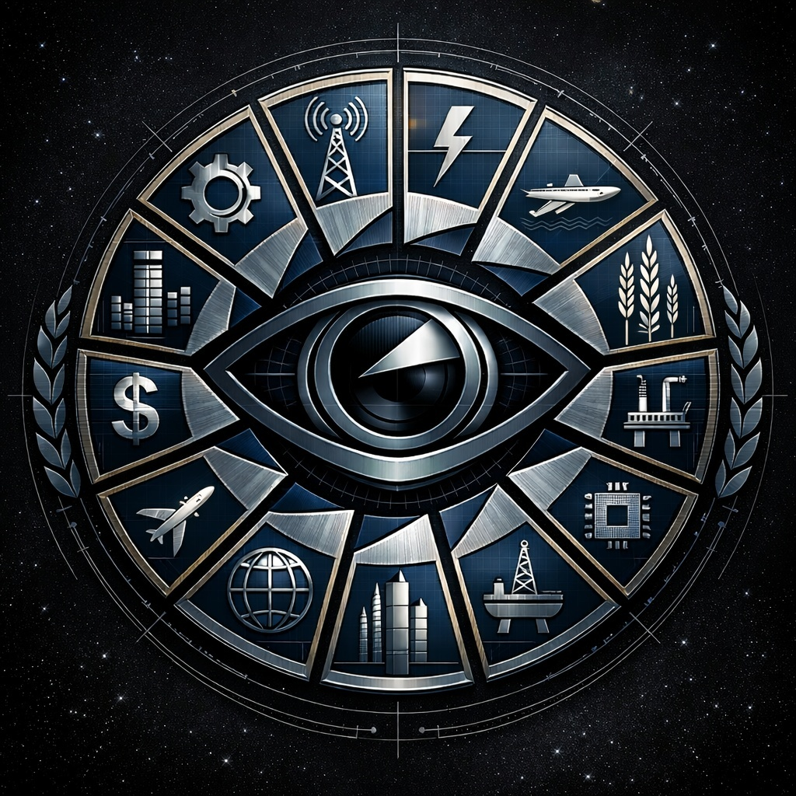

The Consortium
Encyclopaedia Entry - Corporate Governance and Megacorporate Power

The Consortium is the informal name given to the collective of megacorporations that exercises effective control over human space. Comprising fifteen major entities, it functions as both a cartel and a system of mutual governance, with each member corporation holding a monopoly over a specific sector of the economy. Together, they have rendered traditional nation-states obsolete, replacing elected governments with a self-enforcing framework of corporate law and economic dependency.
Origins and Purpose
The Consortium emerged from the period known as the Corporate Consolidation, when successive waves of mergers, hostile acquisitions, and the steady withdrawal of state institutions left a power vacuum that the megacorporations moved to fill. Rather than compete destructively for total dominance, the largest surviving corporations negotiated the Consortium Agreement – a foundational compact establishing territorial boundaries, market divisions, technology-sharing protocols, and mutual enforcement obligations.
The Agreement's genius, from the corporations' perspective, was its self-sustaining nature. By dividing economic sectors between members and prohibiting overlap, it eliminated the conditions that had historically produced competition severe enough to threaten corporate stability. Each member became simultaneously a rival and a guarantor of the others' survival.
Member Corporations
The fifteen member corporations each hold exclusive dominion over their designated sector:
GigaSource
Controls all resource extraction – mining, drilling, and the harvesting of raw materials across terrestrial and extraterrestrial sites. Every other industry depends on its supply chains, making it one of the most strategically critical members.
OmniFab
Manufactures virtually every component required by industry and civilisation, from microchips to starship hulls. It is widely considered the industrial backbone of the Consortium.
AetherLink Communications
Provides the sole interstellar communications infrastructure, using quantum-encrypted data transmission. Beyond its commercial function, AetherLink serves as the Consortium's primary surveillance and information-control mechanism.
CosmoFreight Logistics
Manages all interplanetary and interstellar transport, controlling supply routes and enforcing corporate policy through economic pressure and strategic embargo.
QuantumGrid Energy
Supplies power through fusion reactors, antimatter converters, and space-based solar arrays. It also monitors energy consumption to influence economic behaviour and maintain control over populations and settlements.
HeliosMed Biotech
Dominates medical services and biotechnology research. Healthcare has become a commodity under its management, with premium treatment available only to those holding corporate loyalty or premium status.
OrbitArc Constructions
Designs and builds orbital habitats, planetary bases, and starships, working closely with other Consortium members to maintain strategic control over key locations.
CyberNexus Analytics
Arbitrates data, providing analytics, artificial intelligence systems, and cybersecurity services. It controls the digital landscape and ensures broader Consortium stability by regulating access to information.
TerraForma Environics
Engineers planetary climates and manages ecosystem sustainability, operating at the Consortium's behest to maintain sufficient habitability for continued long-term exploitation.
NovaFoundry Robotics
Develops industrial automation and corporate security forces, providing the physical enforcement infrastructure upon which Consortium policy ultimately relies.
NexusReg Dynamics
Has replaced traditional governmental functions, handling arbitration, dispute resolution, and the enforcement of Consortium regulations through corporate-backed law and economic sanctions.
MercuryTrade Exchange
Serves as the de facto central bank of human space, managing the flow of capital, credit, and transactions and ensuring the Consortium's economic dominance.
VeriFact
Functions as the Consortium's official quality assurance and compliance authority, with extensive powers to monitor, evaluate, and enforce standards across all supply chains. In practice, it serves as an inspection arm for the wider cartel.
HealthDiv
Operates as a pseudo-governmental health and nutrition authority, ostensibly providing oversight of food products. In practice it is widely regarded as corrupt, certifying products in exchange for payment rather than genuine assessment.
StellarGov Solutions
Once intended to provide a veneer of formal governance, StellarGov has been formally deprecated. All governance is now handled through the corporations' direct control over trade, security, and public services.
The Consortium Agreement
Beyond market division, the Consortium Agreement establishes several critical prohibitions designed to prevent any single member from gaining an advantage that could destabilise the balance of power.
Most significantly, research that could lead to the development of artificial general intelligence is explicitly and absolutely prohibited. The reasoning is straightforward: a true AGI, if controlled by a single corporation, would represent an insurmountable competitive advantage. Discovery of prohibited AGI research carries severe consequences – under Consortium law, a transgressing member faces full asset seizure and dissolution, with its technology and holdings distributed among the remaining members.
The Agreement also prohibits direct targeted actions against another member's personnel, and establishes containment protocols governing access to pre-purge technology – advanced systems from before the Corporate Consolidation that the Consortium collectively suppresses to prevent the emergence of independent capabilities outside their control.
Internal Dynamics
Despite their cooperative framework, the Consortium members are not allies in any meaningful sense. Mutual distrust is the norm, and each corporation pursues its own interests within the boundaries the Agreement permits. Intelligence operations targeting fellow members are routine, and information is shared only when withholding it would be more costly.
This tension is most visible when Consortium security is genuinely threatened. When the three most powerful members – OmniFab, AetherLink, and QuantumGrid – have convened to address shared concerns, their meetings have been characterised by careful revelation of partial information and the deliberate concealment of their true knowledge and motives. Each pursues the same quarry through independent channels, unwilling to grant another member an advantage through cooperation.
Relationship to Independent Space
The Consortium maintains its dominance through economic dependency rather than direct military occupation. Settlements, colonies, and outposts that rely on Consortium energy, communications, transport, and manufactured goods have little practical ability to resist corporate policy. Those that attempt to achieve self-sufficiency – by acquiring independent energy generation, for example – are viewed as an existential threat to the model, and are subject to aggressive countermeasures.
The Consortium's greatest vulnerability is the possibility of pre-purge technology enabling communities to exit the network of dependency altogether. This prospect is treated by senior Consortium leadership as a matter of existential importance, warranting the deployment of substantial covert resources.